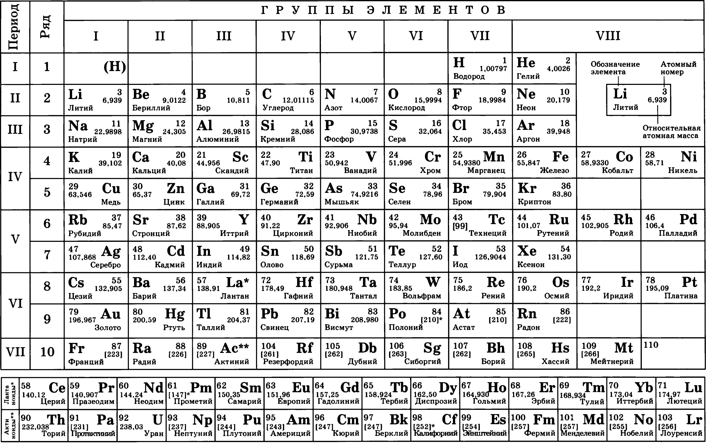

Водород
Гелий
Литий
Бериллий
Бор
Углерод
Азот
Кислород
Фтор
Неон
Натрий
Магний
Алюминий
Кремний
Фосфор
Сера
Хлор
Аргон
Калий
Кальций
Скандий
Титан
Ванадий
Хром
Марганец
Железо
Кобальт
Никель
Медь
Цинк
Галлий
Германий
Мышьяк
Селен
Бром
Криптон
Рубидий
Стронций
Иттрий
Цирконий
Ниобий
Молибден
Технеций
Рутений
Родий
Палладий
Серебро
Кадмий
Индий
Олово
Сурьма
Теллур
Иод
Ксенон
Цезий
Барий
Лантан
Гафний
Тантал
Вольфрам
Рений
Осмий
Иридий
Платина
Золото
Ртуть
Таллий
Свинец
Висмут
Полоний
Астат
Радон
Франций
Радий
Актиний
Резерфордий
Дубний
Сиборгий
Борий
Хассий
Мейтнерий
